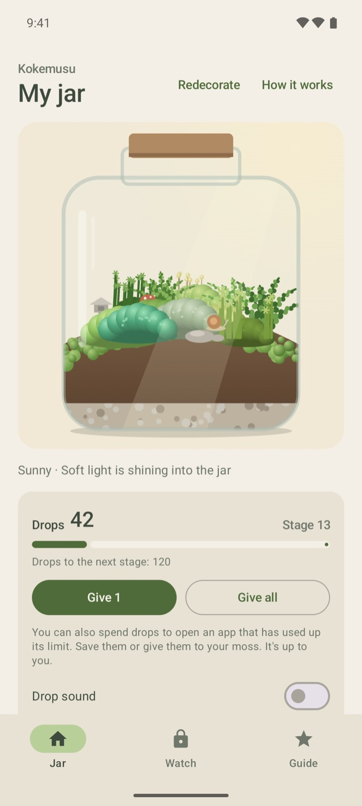
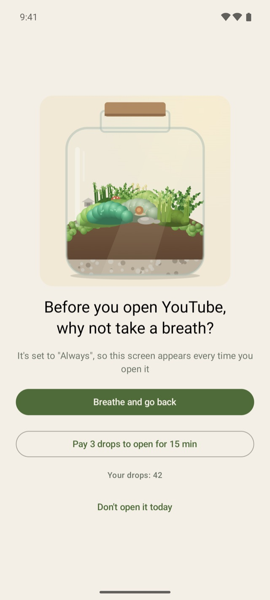
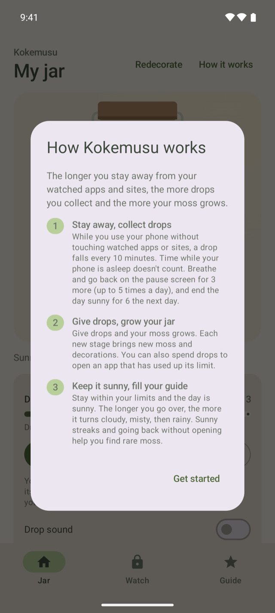
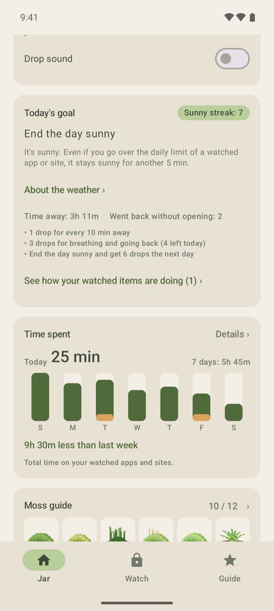
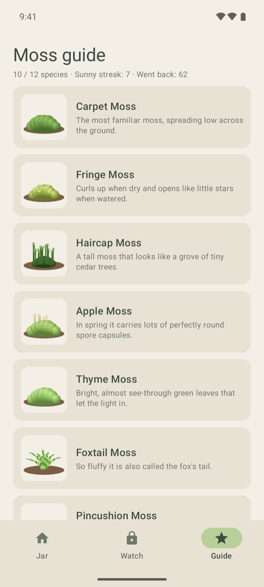
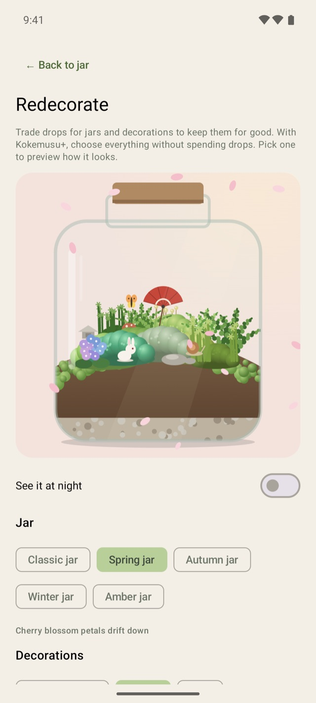

KOKEMUSU ─ 苔むす
Time off your phone,growing.
For days when you keep opening social media without thinking. Time you spend away turns into drops of water that grow the moss in a glass jar. And your evenings and mornings grow too.
Free on iPhone (iOS 17 or later) and Android (8.0 or later). The iPhone version is currently in Japanese only.

Just five minutes before bed
And you did it again.
An hour gone. What stays with you after you put the phone down is often not the lost time, but the small sting of breaking a promise to yourself, again.
Apps that block you, or confront you with how long you spent, end up blaming someone who already blames themselves. That's why they don't stick.
The idea
Count the time that grew,
not the time you lost.
Kokemusu turns time away from your phone into something that grows. Two things, in fact.
The moss in your jar grows
Time you spend away from the apps you watch turns into drops of water. Each time you give drops to your jar, the moss grows a little deeper green.
Your days grow
An earlier night, a few more pages of a book, a conversation face to face. The moss makes that quiet progress visible.
Kokemusu (苔むす) ─ Japanese for "to become covered in moss." Moss grows slowly when it is left alone, untouched. Time away from your phone may not change things overnight, but it adds up.
Kokemusu in 30 seconds
Put your phone down
for one cup of coffee.
From the pause before you open an app to the moss growing in your jar: a day with Kokemusu, in a 30-second film.
The app in the film is shown in Japanese.
How it works
No need to fight
with willpower.
If you want to stop but can't, it's not because your will is weak. There's just nothing that makes you pause at the moment you reach for the app.

1Your jar, right when you reach
Open an app that has used up its limit, and the jar you're growing appears and asks: why not take a breath first?

2Breathe, and go back
Take a breath with the breathing guide. Each time you go back without opening the app, drops fall.
3Time away becomes moss
Stay away from your watched apps for an hour and you get 6 drops. Give them to your jar and the moss grows.
Screens are from the Android version.
No blame
Even on days you overdo it,
the moss won't wither.
Go over your limit and your jar just gets a little misty. No red warnings, no scolding. And when you really need to open an app, you can pay a few drops to open it for 15 minutes.
If today didn't go well, you can start growing again tomorrow. That's why you can keep going.

What testers said
Six people used it for a week.
said they spent less time on their phone
one tester's daily social media time
enjoyed growing the moss
"It broke my habit."
Tester"There's a reward, so it works better than limits."
Tester"Enjoying the moss while cutting down is unique."
TesterFrom a survey of the iOS beta test in Japan (6 people, 7 days, November 2026). Quotes are shortened translations of their answers.
Something to grow
A jar of your own,
grown slowly.
Twelve kinds of moss, from haircap to glowing moss. Seasonal jars and decorations like hydrangeas, a paper umbrella and butterflies. With the weather and the night sky, your jar looks a little different every day.


Peace of mind
Your time stays
in your hands.
Your data stays on your phone
Records and settings are stored only on your device and never sent anywhere.
We don't see what you view
On iPhone, Kokemusu uses Apple's Screen Time framework, so it never learns the names of the apps you pick or what you browse. On Android, it only checks which app or site was opened, never what's on the screen or what you type.
No ads
We won't put anything in this app that takes your time away.
Pricing
Free at its core, for good.
Free
Free
- Watch up to 5 apps and sites
- The pause screen and breathing guide
- Your moss terrarium and moss guide
- A 7-day chart of your time
Kokemusu+
Monthly or yearly (yearly starts with a 7-day free trial)
- Watch unlimited apps and sites
- Per-app limits, time-of-day and weekday rules
- Strict mode and settings lock
- 4-week trends, unlimited redecorating
Prices are shown in your local currency in the store.
Time off your phone,
growing.
As slowly as moss. Starting tonight, one drop at a time.
Available on iPhone and Android